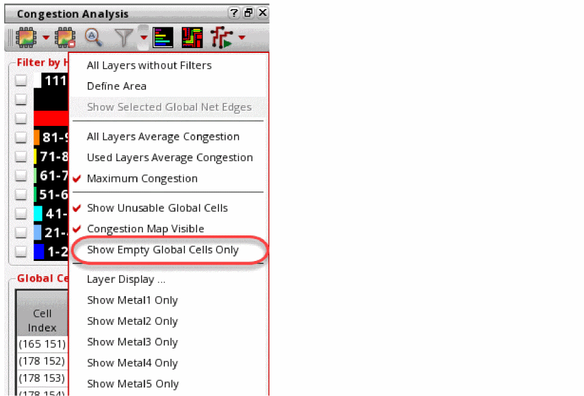
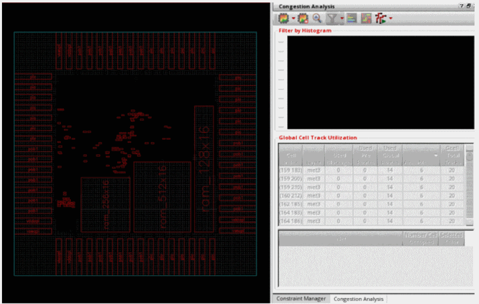

Displaying Empty Global Cells
At times, it is useful to visualize parts of a design that have zero percent congestion. This can help in identifying regions that could be used to add additional structures such as hard macros, soft blocks, or routing. Alternatively, this can help to identify regions in a design that could be removed or compacted in order to shrink a design during floor-planning. To only show gcells with zero percent congestion, perform the following steps.
-
Click the Filter Global Cells by icon
 from the Congestion Analysis toolbar.
from the Congestion Analysis toolbar. -
Click the Show Empty Global Cells Only option from the drop-down list.
The heat map is turned off and only global cells with zero congestion are displayed in the main window.
The histogram and the Global Cell Track Utilization table are inactive and are not filterable or customizable during this mode.
Related Topics
Selecting and Viewing Global Cells
Sorting the Global Cell Track Utilization Table
Return to top